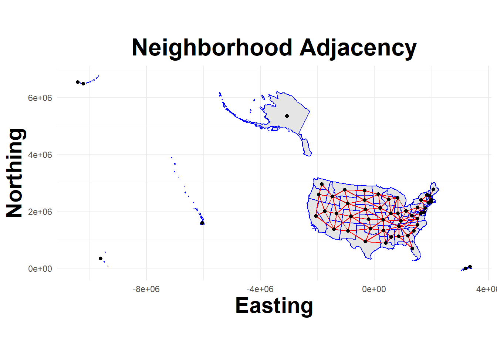

── Attaching core tidyverse packages ──────────────────────── tidyverse 2.0.0 ──
✔ dplyr 1.1.2 ✔ readr 2.1.4
✔ forcats 1.0.0 ✔ stringr 1.5.0
✔ ggplot2 3.4.2 ✔ tibble 3.2.1
✔ lubridate 1.9.2 ✔ tidyr 1.3.0
✔ purrr 1.0.1
── Conflicts ────────────────────────────────────────── tidyverse_conflicts() ──
✖ dplyr::filter() masks stats::filter()
✖ dplyr::lag() masks stats::lag()
ℹ Use the conflicted package (<http://conflicted.r-lib.org/>) to force all conflicts to become errors
Attaching package: 'arrow'
The following object is masked from 'package:lubridate':
duration
The following object is masked from 'package:utils':
timestamp
Attaching package: 'Hmisc'
The following objects are masked from 'package:dplyr':
src, summarize
The following objects are masked from 'package:base':
format.pval, units
Linking to GEOS 3.9.3, GDAL 3.5.2, PROJ 8.2.1; sf_use_s2() is TRUE
Loading required package: spData
To access larger datasets in this package, install the spDataLarge
package with: `install.packages('spDataLarge',
repos='https://nowosad.github.io/drat/', type='source')`
rgeos version: 0.6-2, (SVN revision 693)
GEOS runtime version: 3.9.3-CAPI-1.14.3
Please note that rgeos will be retired during 2023,
plan transition to sf functions using GEOS at your earliest convenience.
GEOS using OverlayNG
Linking to sp version: 1.6-0
Polygon checking: TRUE
Attaching package: 'rgeos'
The following object is masked from 'package:Hmisc':
translate
The following object is masked from 'package:dplyr':
symdiff
Attaching package: 'igraph'
The following object is masked from 'package:rgeos':
union
The following objects are masked from 'package:lubridate':
%--%, union
The following objects are masked from 'package:dplyr':
as_data_frame, groups, union
The following objects are masked from 'package:purrr':
compose, simplify
The following object is masked from 'package:tidyr':
crossing
The following object is masked from 'package:tibble':
as_data_frame
The following object is masked from 'package:cli':
tree
The following objects are masked from 'package:stats':
decompose, spectrum
The following object is masked from 'package:base':
union
Checking rgeos availability: TRUE
Please note that 'maptools' will be retired during 2023,
plan transition at your earliest convenience;
some functionality will be moved to 'sp'.
Attaching package: 'maptools'
The following object is masked from 'package:Hmisc':
label
Loading required package: maps
Attaching package: 'maps'
The following object is masked from 'package:purrr':
map
Attaching package: 'censusapi'
The following object is masked from 'package:methods':
getFunction
Loading required package: Matrix
Attaching package: 'Matrix'
The following objects are masked from 'package:tidyr':
expand, pack, unpack
Loading required package: foreach
Attaching package: 'foreach'
The following objects are masked from 'package:purrr':
accumulate, when
Loading required package: parallel
This is INLA_23.04.24 built 2023-04-24 19:15:35 UTC.
- See www.r-inla.org/contact-us for how to get help.
Registered S3 method overwritten by 'quantmod':
method from
as.zoo.data.frame zoo A brief overview of the CovidCAR Package
CovidCAR is intended to facilitate Covid19 model building, ensembling, and evalutaion
Tutorial Overview
This tutorial briefly outlines core functions used to preprocess observation data, build spatial-temporal models, and post-process model outputs. Its purpose is to demonstrate a standard workflow not to provide an in depth examination of model building techniques.
Preliminaries
Hide code
library(CovidCAR)Setup Analysis
Specifiy Dates and Directories
The setup_analysis() function defines key date thresholds for model training and forecast horizon periods and should always be run before using any other functions in the CovidCAR package. The dates are used by other functions to retrieve Covid19 observations (daily hospital incidence) and define points in model the response variable to shift from generating fitted estimates to producing forecast. The model also allow for recording directory paths to (optionally) pull previously cached data and write pipeline outputs.
Hide code
setup_analysis(report_date = "2021-08-23", #report date, first forecast day
training_period = 2*28, #days
forecast_horizon = 28, #days
output_dir = "C:/Users/unp7/Desktop/Misc/test_CovidCAR", #sub directories and outputs written here
local_cache_dir = "C:/Users/unp7/Desktop/GitHub/covid19Forecasts/local/cache" #if available
)→ Your local cache will be available to get_covid19_obs()→ Analysis outputs will be written to C:/Users/unp7/Desktop/Misc/test_CovidCAR/2021-08-23-CovidCAR-run2023-05-19Define Spatial Domain
The download_boundaries() function
Hide code
States <- download_boundaries(unit = "state")→ Downloading polygon files...Reading layer `us-state-boundaries' from data source
`C:\Users\unp7\Desktop\Misc\test_CovidCAR\2021-08-23-CovidCAR-run2023-05-19\polygons'
using driver `ESRI Shapefile'
Simple feature collection with 56 features and 20 fields
Geometry type: MULTIPOLYGON
Dimension: XY
Bounding box: xmin: -179.2311 ymin: -14.60181 xmax: 179.8597 ymax: 71.44069
Geodetic CRS: WGS 84Adjacency Graph
The get_neighbors() function
Hide code
nb_islands = get_neighbors(States, connect=FALSE)
summary(nb_islands)Neighbour list object:
Number of regions: 56
Number of nonzero links: 224
Percentage nonzero weights: 7.142857
Average number of links: 4
7 regions with no links:
1 24 32 33 38 42 54
Link number distribution:
0 1 2 3 4 5 6 7 8
7 1 4 9 9 10 12 2 2
1 least connected region:
13 with 1 link
2 most connected regions:
49 56 with 8 linksHide code
nb_coerced = get_neighbors(States, connect=TRUE)Warning in spdep::mat2listw(edgemat, style = "M"): style is M (missing); style
should be set to a valid valueHide code
summary(nb_coerced)Neighbour list object:
Number of regions: 56
Number of nonzero links: 242
Percentage nonzero weights: 7.716837
Average number of links: 4.321429
Link number distribution:
1 2 3 4 5 6 7 8
5 3 10 12 10 11 3 2
5 least connected regions:
1 13 38 42 54 with 1 link
2 most connected regions:
49 56 with 8 linksView mapped adjacency
The plot_neighbors() function
Hide code
plot_neighbors(States, nb_islands)Regions defined for each Polygons
Hide code
plot_neighbors(States, nb_coerced)Regions defined for each Polygons
Convert to INLA Graph The nb2INLA() and inla.read.graph() functions
Hide code
nb2INLA("J", nb_coerced)
J = inla.read.graph("J")Retrieve Observation Data
The get_covid19_obs() function
Hide code
MinDate = min(full_time_span)
MaxDate = max(full_time_span)
#testData = get_covid19_obs(source = "cache", start_date = MinDate, end_date = MaxDate)
testData = get_covid19_obs(source = "covidcast", start_date = MinDate, end_date = MaxDate)→ Loading location crosswalkRows: 57 Columns: 4
── Column specification ────────────────────────────────────────────────────────
Delimiter: "|"
chr (4): STATE, STUSAB, STATE_NAME, STATENS
ℹ Use `spec()` to retrieve the full column specification for this data.
ℹ Specify the column types or set `show_col_types = FALSE` to quiet this message.
→ Fetching COVID-19 observed data from covidcast
Fetched day 2021-06-28 to 2021-09-20: num_entries = 4534Hide code
#testData = get_covid19_obs(source = "test", start_date = MinDate, end_date = MaxDate)
dim(testData)[1] 4534 5Hide code
head(testData)| date | value | signal | location | location_name |
|---|---|---|---|---|
| 2021-06-28 | 2 | hosp | 02 | Alaska |
| 2021-06-28 | 29 | hosp | 01 | Alabama |
| 2021-06-28 | 55 | hosp | 05 | Arkansas |
| 2021-06-28 | 75 | hosp | 04 | Arizona |
| 2021-06-28 | 201 | hosp | 06 | California |
| 2021-06-28 | 60 | hosp | 08 | Colorado |
Add Spatial Index
The append_region_index() function
Hide code
train_data = append_region_index(train_data = testData, polys = States)
which(is.na(train_data$Region))integer(0)Forecast Template
The create_forecast_template() function
Hide code
train_data = create_forecast_template(train_data)Additional Covariates
Demographic Data
The getPovertyPop() function provides a wrapper function for the getCensus package for loading American Community Survey (ACS) data from the U.S. Census Bureau.
Hide code
PovPop_data = getPovertyPop(key=secret_api,
vars_pov = c("SAEPOVRTALL_PT"),
vars_pop = c('AGEGROUP','POP'), filt_age = c(12,18))
train_data = left_join(train_data, PovPop_data, by = "location")Rt Estimation
The Rt_projection() function combines the estimate_R() function from the EpiEstim package with simple timeseries models (options to use the forecast or INLA packages) to forecast Rt estimated over the model training period over the forecast horizon (28 days in the future). This is just an experimental function. Rather than using forecasted Rt from these runs, models later in this flow will forecast Rt concurrently with hospital incidence (the principal target in this analysis).
Hide code
Rt_df = Rt_projection(train_data, mean_si = 5.7, std_si = 2, forecast_horizon = 28, method = "dlm")✔ Alaska completed!✔ Alabama completed!✔ Arkansas completed!✔ Arizona completed!✔ California completed!✔ Colorado completed!✔ Connecticut completed!✔ District of Columbia completed!✔ Delaware completed!✔ Florida completed!✔ Georgia completed!✔ Hawaii completed!✔ Iowa completed!✔ Idaho completed!✔ Illinois completed!✔ Indiana completed!✔ Kansas completed!✔ Kentucky completed!✔ Louisiana completed!✔ Massachusetts completed!✔ Maryland completed!✔ Maine completed!✔ Michigan completed!✔ Minnesota completed!✔ Missouri completed!✔ Mississippi completed!✔ Montana completed!✔ North Carolina completed!✔ North Dakota completed!✔ Nebraska completed!✔ New Hampshire completed!✔ New Jersey completed!✔ New Mexico completed!✔ Nevada completed!✔ New York completed!✔ Ohio completed!✔ Oklahoma completed!✔ Oregon completed!✔ Pennsylvania completed!✔ Puerto Rico completed!Warning in estimate_R_func(incid = incid, method = method, si_sample = si_sample, : You're estimating R too early in the epidemic to get the desired
posterior CV.✔ Rhode Island completed!✔ South Carolina completed!✔ South Dakota completed!✔ Tennessee completed!✔ Texas completed!✔ Utah completed!✔ Virginia completed!Warning in estimate_R_func(incid = incid, method = method, si_sample = si_sample, : You're estimating R too early in the epidemic to get the desired
posterior CV.✔ Virgin Islands completed!Warning in estimate_R_func(incid = incid, method = method, si_sample = si_sample, : You're estimating R too early in the epidemic to get the desired
posterior CV.✔ Vermont completed!✔ Washington completed!✔ Wisconsin completed!✔ West Virginia completed!✔ Wyoming completed!✔ American Samoa completed!Hide code
head(Rt_df)| date | value | signal | location | location_name | day | trn_tst | Region | SAEPOVRTALL_PT | age_pop | Rt_raw | Rt |
|---|---|---|---|---|---|---|---|---|---|---|---|
| 2021-06-28 | 2 | hosp | 02 | Alaska | Monday | train | 38 | 9.6 | 184927 | NA | NA |
| 2021-06-29 | 5 | hosp | 02 | Alaska | Tuesday | train | 38 | 9.6 | 184927 | NA | NA |
| 2021-06-30 | 2 | hosp | 02 | Alaska | Wednesday | train | 38 | 9.6 | 184927 | NA | NA |
| 2021-07-01 | 6 | hosp | 02 | Alaska | Thursday | train | 38 | 9.6 | 184927 | NA | NA |
| 2021-07-02 | 3 | hosp | 02 | Alaska | Friday | train | 38 | 9.6 | 184927 | NA | NA |
| 2021-07-03 | 7 | hosp | 02 | Alaska | Saturday | train | 38 | 9.6 | 184927 | NA | NA |
Organize Data
Clean Dataframe
The time_index() function
Hide code
train_data <- as.data.frame(Rt_df) %>%
mutate(
s_pop = log(age_pop),
s_pov = as.numeric(scale(SAEPOVRTALL_PT)),
doy = as.integer(as.factor(date)),
doy.1 = doy,
Region.Wk = paste0("ID", Region, "W", doy),
ID.Region.Wk = as.integer(as.factor(Region.Wk)),
week = week(date),
int_week.1 = as.integer(as.factor(week)),
int_week.2 = int_week.1,
int_week.3 = int_week.1,
threeday_indx = time_index(date, seq(min(date), max(date), by = "3 days")),
threeday_indx.1 = as.integer(as.factor(threeday_indx)),
fourday_indx = time_index(date, seq(min(date), max(date), by = "4 days")),
fourday_indx.1 = as.integer(as.factor(fourday_indx)),
fiveday_indx = time_index(date, seq(min(date), max(date), by = "5 days")),
fiveday_indx.1 = as.integer(as.factor(fiveday_indx)),
eightday_indx = time_index(date, seq(min(date), max(date), by = "8 days")),
eightday_indx.1 = as.integer(as.factor(eightday_indx)),
biweek_indx = time_index(date, seq(min(date), max(date), by = "14 days")),
biweek_indx.1 = as.integer(as.factor(biweek_indx)),
Region.1 = Region, Region.2 = Region, Region.3 = Region,
Region.4 = Region, Region.5 = Region
) %>%
select(c(-biweek_indx, threeday_indx, fourday_indx, fiveday_indx, eightday_indx))
head(train_data)| date | value | signal | location | location_name | day | trn_tst | Region | SAEPOVRTALL_PT | age_pop | Rt_raw | Rt | s_pop | s_pov | doy | doy.1 | Region.Wk | ID.Region.Wk | week | int_week.1 | int_week.2 | int_week.3 | threeday_indx | threeday_indx.1 | fourday_indx | fourday_indx.1 | fiveday_indx | fiveday_indx.1 | eightday_indx | eightday_indx.1 | biweek_indx.1 | Region.1 | Region.2 | Region.3 | Region.4 | Region.5 |
|---|---|---|---|---|---|---|---|---|---|---|---|---|---|---|---|---|---|---|---|---|---|---|---|---|---|---|---|---|---|---|---|---|---|---|---|
| 2021-06-28 | 2 | hosp | 02 | Alaska | Monday | train | 38 | 9.6 | 184927 | NA | NA | 12.12772 | -0.8064822 | 1 | 1 | ID38W1 | 2466 | 26 | 1 | 1 | 1 | 2021-06-28 | 1 | 2021-06-28 | 1 | 2021-06-28 | 1 | 2021-06-28 | 1 | 1 | 38 | 38 | 38 | 38 | 38 |
| 2021-06-29 | 5 | hosp | 02 | Alaska | Tuesday | train | 38 | 9.6 | 184927 | NA | NA | 12.12772 | -0.8064822 | 2 | 2 | ID38W2 | 2477 | 26 | 1 | 1 | 1 | 2021-06-28 | 1 | 2021-06-28 | 1 | 2021-06-28 | 1 | 2021-06-28 | 1 | 1 | 38 | 38 | 38 | 38 | 38 |
| 2021-06-30 | 2 | hosp | 02 | Alaska | Wednesday | train | 38 | 9.6 | 184927 | NA | NA | 12.12772 | -0.8064822 | 3 | 3 | ID38W3 | 2488 | 26 | 1 | 1 | 1 | 2021-07-01 | 2 | 2021-06-28 | 1 | 2021-06-28 | 1 | 2021-06-28 | 1 | 1 | 38 | 38 | 38 | 38 | 38 |
| 2021-07-01 | 6 | hosp | 02 | Alaska | Thursday | train | 38 | 9.6 | 184927 | NA | NA | 12.12772 | -0.8064822 | 4 | 4 | ID38W4 | 2499 | 26 | 1 | 1 | 1 | 2021-07-01 | 2 | 2021-07-02 | 2 | 2021-07-03 | 2 | 2021-06-28 | 1 | 1 | 38 | 38 | 38 | 38 | 38 |
| 2021-07-02 | 3 | hosp | 02 | Alaska | Friday | train | 38 | 9.6 | 184927 | NA | NA | 12.12772 | -0.8064822 | 5 | 5 | ID38W5 | 2510 | 27 | 2 | 2 | 2 | 2021-07-01 | 2 | 2021-07-02 | 2 | 2021-07-03 | 2 | 2021-06-28 | 1 | 1 | 38 | 38 | 38 | 38 | 38 |
| 2021-07-03 | 7 | hosp | 02 | Alaska | Saturday | train | 38 | 9.6 | 184927 | NA | NA | 12.12772 | -0.8064822 | 6 | 6 | ID38W6 | 2521 | 27 | 2 | 2 | 2 | 2021-07-04 | 3 | 2021-07-02 | 2 | 2021-07-03 | 2 | 2021-07-06 | 2 | 1 | 38 | 38 | 38 | 38 | 38 |
Code Respone Variable
Hide code
train_data$resp = ifelse(train_data$trn_tst == "train", train_data$value, NA) #Set obs value to NA for forecasts periods
resp_scale_obj = scale(train_data$resp, scale=T, center=T) #scaled object
obs_scale = function(r)r*attr(resp_scale_obj,'scaled:scale') + attr(resp_scale_obj, 'scaled:center') #transform back to observation scale
train_data$nrm_resp = as.numeric(resp_scale_obj)Format as a Datastack
Hide code
nrm.lst = list(list(intercept1 = rep(1, dim(train_data)[1])),
list(pov_pct = train_data[,"s_pov"],
pop = train_data[,"s_pop"],
Rt_raw = train_data[,"Rt_raw"],
Rt_raw.1 = train_data[,"Rt_raw"],
Rt = train_data[,"Rt"],
Rt.1 = train_data[,"Rt"],
doy = train_data[,"doy"],
doy.1 = train_data[,"doy.1"],
doy.2 = train_data[,"doy.1"],
int_week.1 = train_data[,"int_week.1"],
int_week.2 = train_data[,"int_week.2"],
int_week.3 = train_data[,"int_week.3"],
threeday_indx.1 = train_data[,"threeday_indx.1"],
fourday_indx.1 = train_data[,"fourday_indx.1"],
fiveday_indx.1 = train_data[,"fiveday_indx.1"],
eightday_indx.1 = train_data[,"eightday_indx.1"],
biwek_indx.1 = train_data[,"biweek_indx.1"],
Region.1 = train_data[,"Region.1"],
Region.2 = train_data[,"Region.2"],
Region.3 = train_data[,"Region.3"],
Region.4 = train_data[,"Region.4"],
Region.5 = train_data[,"Region.5"],
Region_Wk = train_data[,"ID.Region.Wk"],
dow = train_data[,"day"]))
nrm.stk = inla.stack(data = list(Y = train_data$nrm_resp),
A = list(1,1),
effects = nrm.lst,
tag = "nrm")Model Priors and Forumulae
Set Priors
Hide code
#bym prior
bym_hyper <- list(phi = list(prior = "pc",
param = c(0.5, 2/3),
initial = 3),
prec = list(prior = "pc.prec",
param = c(1, 0.01),
initial = 1.5))
#Normal prior
norm.prior <- list(theta=list(prior = "normal", param=c(0, 1)))
#iid prior
pc_prec_iid <- list(theta = list(prior="pc.prec", param=c(0.5, 0.01)))
#ar1 prior
pc_cor_ar1 <- list(theta = list(prior = 'pccor1', param = c(0.5, 0.9)))
#rw2 prior
pc_rw2 <- list(prec=list(prior="pc.prec", param=c(0.5,0.01)))
#bundle priors to archive run
priors.list <- list()
priors.list[["bym_hyper"]] <- bym_hyper
priors.list[["norm.prior"]] <- norm.prior
priors.list[["pc_prec_iid"]] <- pc_prec_iid
priors.list[["pc_cor_ar1"]] <- pc_cor_ar1
priors.list[["pc_rw2"]] <- pc_rw2Specify Formulas
Formula 1: Random Walk plus noise for each location (i.e., state)
Hide code
Frm.1 = Y ~ -1 + #remove default intercept
intercept1 + #custom intercept
f(doy.1, #order by time index (daily)
constr=TRUE, #enforced zero mean
model="rw1", #order-1 random walk with noise
scale.model = TRUE, #additional internal scaling
group = Region.1, #run rw1 model for groups based on location
control.group=list(model="iid"), #groups are treated independently
hyper=pc_rw2) #prior for rw2Formula 2: Random Walk plus noise and trend for each location
Hide code
Frm.2 = Y ~ -1 +
intercept1 +
f(doy.1,
constr=TRUE,
model="rw1",
scale.model = TRUE,
group = Region.1,
control.group=list(model="iid"),
hyper=pc_rw2) +
f(doy.2, model="linear", mean.linear = 0, prec.linear = 0.001) #add linear trend to rw1Formula 3: Common spatial effect for timesteps but each location has separate autoregression
Hide code
Frm.3 = Y ~ -1 +
intercept1 +
f(Region.1, #location index
model="bym2", #spatial effect, Besag-York-Mollie model (the 2 indicates scaling)
graph=J, #Adjacency graph to identify neighbors
constr=TRUE, #enforced zero mean
hyper=bym_hyper) + #BYM prior
f(doy.1, #order by time index (daily)
model="ar1", #apply order-1 autoregressive
constr=TRUE,
group = Region.1, #run ar1 model for groups based on location
control.group=list(model="iid"), #groups are treated independently
hyper=pc_cor_ar1) Formula 4: Separate spatial effects for timesteps (realted by ar1) and each location has its own autoregressive timetrend
Hide code
Frm.4 = Y ~ -1 +
intercept1 +
f(Region.1,
model="bym2",
graph=J,
constr=TRUE,
group = doy, #time index, daily (create separate realizations of spatial covariate for each day)
control.group=list(model="ar1"), #groups are related via an order-1 autoregressive
hyper=bym_hyper) + #prior for BYM
f(doy.1,
model="ar1",
constr=TRUE,
group = Region.1,
control.group=list(model="iid"),
hyper=pc_cor_ar1) Formula 5: As Formula 4 but with space-time interaction to capture location and time specific variation outside of modeled trends.
Hide code
Frm.5 = Y ~ -1 +
intercept1 +
f(Region.1,
model="bym2",
graph=J,
constr=TRUE,
group = doy,
control.group=list(model="ar1"),
hyper=bym_hyper) +
f(doy.1,
model="ar1",
constr=TRUE,
group = Region.1,
control.group=list(model="iid"),
hyper=pc_cor_ar1) +
f(Region_Wk, #Index for all location*time combinations (space-time interaction)
model="iid", #each location and time combination considered independently
constr=TRUE,
hyper=pc_prec_iid) Formula 6: As Formula 5 but adding covariate for variation due to day of week (e.g. Monday, Tuesday,…Sunday).
Hide code
Frm.6 = Y ~ -1 +
intercept1 +
f(Region.1,
model="bym2",
graph=J,
constr=TRUE,
group = doy,
hyper=bym_hyper,
control.group=list(model="ar1")) +
f(doy.1,
model="ar1",
constr=TRUE,
group = Region.1,
control.group=list(model="iid"),
hyper=pc_cor_ar1) +
f(dow, #discrete variable indicating day of week, e.g. Monday, Tuesday,...Sunday
constr=TRUE,
model="iid", #days of week may vary independently
group = Region.2, #variation attributed to days of week may differ by location
control.group=list(model="iid"),
hyper=pc_prec_iid) +
f(Region_Wk,
model="iid",
constr=TRUE,
hyper=pc_prec_iid) Formula 7: Including Rt estimates as an experimental covariate. Forecast Rt trend using an autoregressive model.
Hide code
Frm.7 = Y ~ -1 +
intercept1 +
pov_pct + pop +
f(Region.1,
model="bym2",
graph=J,
constr=TRUE,
group = doy,
hyper=bym_hyper,
control.group=list(model="ar1")) +
f(doy.1, Rt_raw, #order by time index (daily) but weight each timestep by corresponding Rt_raw estimate
model="ar1", #apply order-1 autoregressive to Rt weighted time index above
constr=TRUE,
group = Region.2,
control.group=list(model="iid"),
hyper=pc_cor_ar1) +
f(dow,
constr=TRUE,
model="iid",
group = Region.3,
control.group=list(model="iid"),
hyper=pc_prec_iid) +
f(Region_Wk,
model="iid",
constr=TRUE,
hyper=pc_prec_iid) Formula 8
Hide code
Frm.8 = Y ~ -1 +
intercept1 +
pov_pct + pop + #linear covariates for poverty and population over 55yrs
f(Region.1,
model="bym2",
graph=J,
constr=TRUE,
group = doy,
hyper=bym_hyper,
control.group=list(model="ar1")) +
f(threeday_indx.1, #time index, 3days
constr=TRUE,
model="rw2", #order-2 random walk with noise
scale.model = TRUE,
group = Region.2,
control.group=list(model="iid"),
hyper=pc_rw2) +
f(doy.1, Rt_raw,
model="ar1",
constr=TRUE,
group = Region.3,
control.group=list(model="iid"),
hyper=pc_cor_ar1) +
f(dow,
constr=TRUE,
model="iid",
group = Region.4,
control.group=list(model="iid"),
hyper=pc_prec_iid) +
f(Region_Wk,
model="iid",
constr=TRUE,
hyper=pc_prec_iid) Organize Formulas
Hide code
formulas.list <- list()
formulas.list[["base_rw1"]] <- Frm.1
formulas.list[["rw1_trend"]] <- Frm.2
formulas.list[["base_car"]] <- Frm.3
formulas.list[["car_time"]] <- Frm.4
formulas.list[["car_sti"]] <- Frm.5
formulas.list[["car_wdays"]] <- Frm.6
formulas.list[["car_rt"]] <- Frm.7
formulas.list[["car_full"]] <- Frm.8Run Models
The run_model_list() function
Hide code
formulas.list = formulas.list[c(1:4)] #short list for demo, fast run models
models_out = run_model_list(formulas.list=formulas.list,
dataStack=nrm.stk,
likelihood = "gaussian",
config=FALSE, verbose = FALSE)── Specifying a gaussian likelihood for all models. ──→ Running models ✔ Model base_rw1 completed!→ Running models ✔ Model rw1_trend completed!→ Running models Warning in inla.model.properties.generic(inla.trim.family(model), mm[names(mm) == : Model 'bym2' in section 'latent' is marked as 'experimental'; changes may appear at any time.
Use this model with extra care!!! Further warnings are disabled.✔ Model base_car completed!
→ Running models ✔ Model car_time completed!Extract and Format Forecasts
The extract_forecasts() function pulls forecasts from models and saves them to forecasts analysis directory. Returns forecast_paths object with vector of path names.
Hide code
extract_forecasts(mod_out=models_out,
dataStack=nrm.stk, train_data=train_data)ℹ Writing model forecasts to analysis directory: ✔ base_rw1 [995ms]ℹ Writing model forecasts to analysis directory: ✔ rw1_trend [1s]ℹ Writing model forecasts to analysis directory: ✔ base_car [1.1s]ℹ Writing model forecasts to analysis directory: ✔ car_time [1.2s]Examine Results
Hide code
forecast2 = read.csv(forecast_paths[2])
head(forecast2)| forecast_date | location | target | target_end_date | type | quantile | value |
|---|---|---|---|---|---|---|
| 2021-08-23 | 02 | 0 day ahead inc hosp | 2021-08-23 | quantile | 0.01 | 18.093393 |
| 2021-08-23 | 02 | 1 day ahead inc hosp | 2021-08-24 | quantile | 0.01 | 0.000000 |
| 2021-08-23 | 02 | 2 day ahead inc hosp | 2021-08-25 | quantile | 0.01 | 0.000000 |
| 2021-08-23 | 02 | 3 day ahead inc hosp | 2021-08-26 | quantile | 0.01 | 4.850225 |
| 2021-08-23 | 02 | 4 day ahead inc hosp | 2021-08-27 | quantile | 0.01 | 33.667713 |
| 2021-08-23 | 02 | 5 day ahead inc hosp | 2021-08-28 | quantile | 0.01 | 65.695473 |